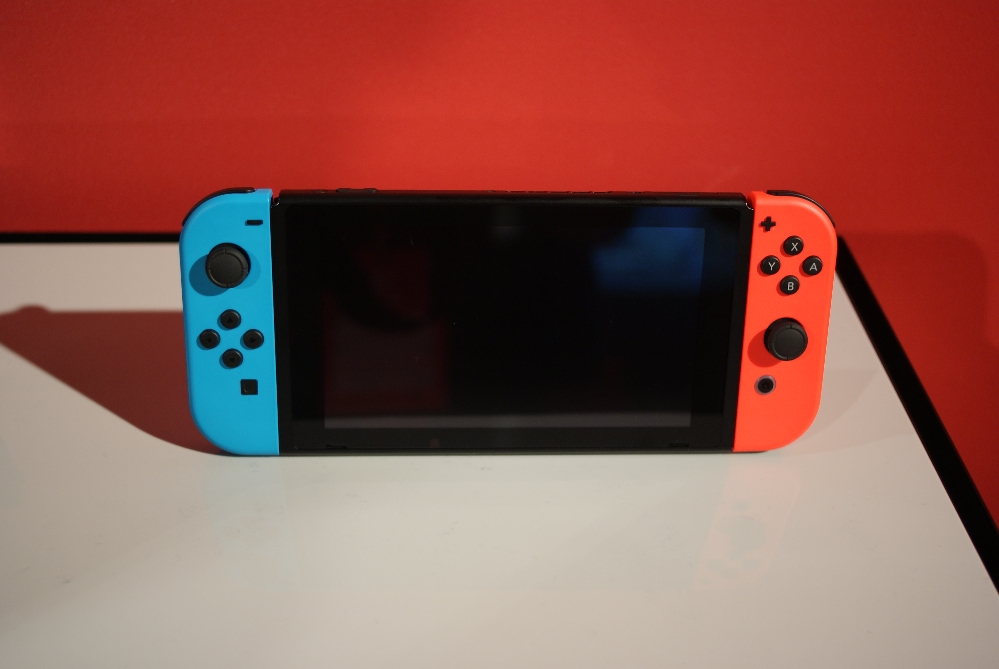
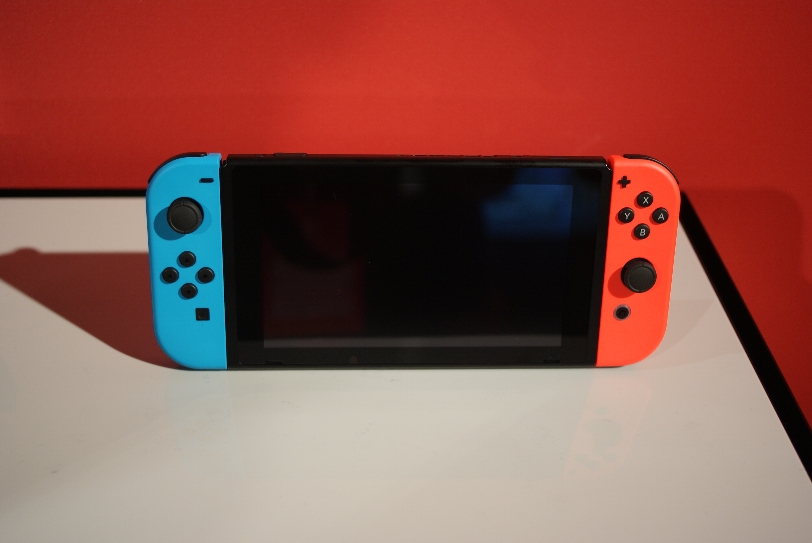

Technology advanced a lot which resulted in many competitions in the market, thus new console need to have better graphics or new innovations to survive.As of now, Nintendo released 3 consoles to the market.
Nintendo 3DS
Launch Year: 2011
Notable Games: Rune Factory 4, Pokemon Sun and Moon, Bravely Default, Mario Kart 7
Summary: Nintendo 3DS is an upgraded DS. It has better graphics with the ability to make some games look 3D. However, it was less popular than DS because it was more expensive than usual, disappointing 3D display and performances. Due to those problems, it has a moderate sales with only 65 million units sold.
Wii U
Launch Year: 2012
Notable Games: Nintendo Land, Super Mario 3D World, Splatoon
Summary: Wii U was the successor to the Wii. Wii U supports high-definition graphics and a touchscreen. While it's inital release was great,it was considered as a failure due to low sales. One main reason for low sales is due to not enough huge popular franchise games being released. It only sold 13 million units.
Nintendo Switch
Launch Year: 2017
Notable Games: The Legend of Zelda: Breath of the Wild, Animal Crossing: New Horizons, Super Mario Odyssey
Summary: Nintendo Switch is a video game console that can be played as a tablet-like device with touchscreen or docking station to play on a big TV. It can be considered as a success due to high sales and Nintendo released many popular games such as The Legend of Zelda and Animal Crossing. Currently, it sold over 68.3 million consoles

 
